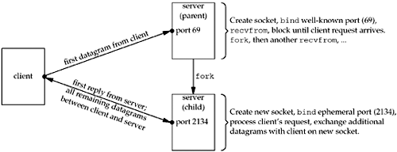
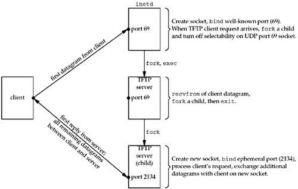

| [ Team LiB ] |
|
22.7 Concurrent UDP ServersMost UDP servers are iterative: The server waits for a client request, reads the request, processes the request, sends back the reply, and then waits for the next client request. But when the processing of the client request takes a long time, some form of concurrency is desired. The definition of a "long time" is whatever is considered too much time for another client to wait while the current client is being serviced. For example, if two client requests arrive within 10 ms of each other, and it takes an average of 5 seconds of clock time to service a client, then the second client will have to wait about 10 seconds for its reply, instead of about 5 seconds if the request was handled as soon as it arrived. With TCP, it is simple to just fork a new child (or create a new thread, as we will see in Chapter 26) and let the child handle the new client. What simplifies this server concurrency when TCP is being used is that every client connection is unique: The TCP socket pair is unique for every connection. But with UDP, we must deal with two different types of servers:
An example of the second type of UDP server is TFTP. To transfer a file using TFTP normally requires many datagrams (hundreds or thousands, depending on the file size), because the protocol sends only 512 bytes per datagram. The client sends a datagram to the server's well-known port (69), specifying the file to send or receive. The server reads the request, but sends its reply from another socket that it creates and bind to an ephemeral port. All subsequent datagrams between the client and server for this file use the new socket. This allows the main TFTP server to continue to handle other client requests, which arrive at port 69, while this file transfer takes place (perhaps over seconds, or even minutes). If we assume a standalone TFTP server (i.e., not invoked by inetd), we have the scenario shown in Figure 22.19. We assume that the ephemeral port bound by the child to its new socket is 2134. Figure 22.19. Processes involved in standalone concurrent UDP server. If inetd is used, the scenario involves one more step. Recall from Figure 13.6 that most UDP servers specify the wait-flag as wait. In our description following Figure 13.10, we said that this causes inetd to stop selecting on the socket until its child terminates, allowing its child to read the datagram that has arrived on the socket. Figure 22.20 shows the steps involved. Figure 22.20. UDP concurrent server invoked by inetd. The TFTP server that is the child of inetd calls recvfrom and reads the client request. It then forks a child of its own, and that child will process the client request. The TFTP server then calls exit, sending SIGCHLD to inetd, which tells inetd to again select on the socket bound to UDP port 69. |
| [ Team LiB ] |
|